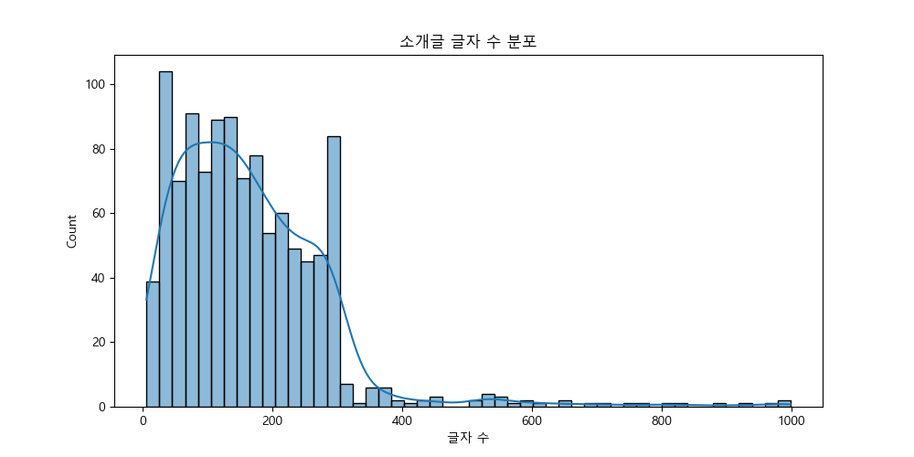
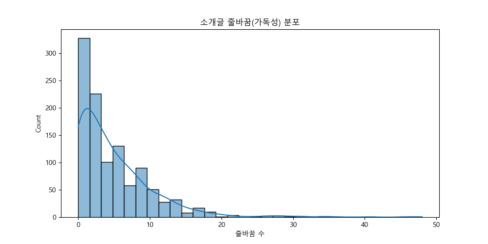
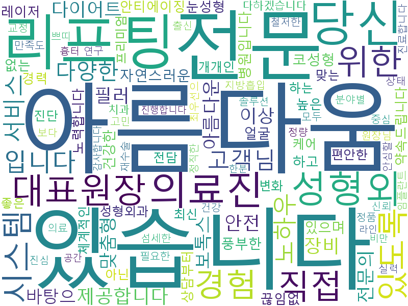

2차 EDA: 병원 소개글(Introduction) 심층 분석
1. 데이터 로드 및 전처리
- 전체 데이터 수: 1103
- 소개글이 있는 병원 수: 1098
- 중복된 소개글 수: 36 (프랜차이즈 또는 동일 병원의 중복 등록 가능성)
2. 정량적 구조 분석
| char_len | word_count | newline_count | |
|---|---|---|---|
| count | 1098 | 1098 | 1098 |
| mean | 164.932 | 35.3716 | 4.94353 |
| std | 122.71 | 27.0844 | 5.51326 |
| min | 6 | 1 | 0 |
| 25% | 79 | 17 | 1 |
| 50% | 143 | 31 | 3 |
| 75% | 227 | 49 | 7 |
| max | 998 | 229 | 48 |


3. 키워드 분석 (단순 빈도 분석)
- 형태소 분석기(Kiwi) 호환성 문제로 정규식 기반 단순 분석 수행. 키워드 분석 진행 중...
Top 50 키워드
| Keyword | Frequency | |
|---|---|---|
| 0 | 아름다움 | 416 |
| 1 | 있습니다 | 337 |
| 2 | 전문 | 248 |
| 3 | 리프팅 | 180 |
| 4 | 당신 | 170 |
| 5 | 의료진 | 166 |
| 6 | 성형외 | 159 |
| 7 | 대표원장 | 133 |
| 8 | 위한 | 128 |
| 9 | 직접 | 121 |
| 10 | 시스템 | 115 |
| 11 | 있도록 | 114 |
| 12 | 경험 | 114 |
| 13 | 입니다 | 113 |
| 14 | 노하우 | 108 |
| 15 | 고객님 | 98 |
| 16 | 서비스 | 96 |
| 17 | 다양한 | 95 |
| 18 | 제공합니다 | 90 |
| 19 | 필러 | 87 |
| 20 | 장비 | 85 |
| 21 | 보톡스 | 84 |
| 22 | 다이어트 | 84 |
| 23 | 전문의 | 84 |
| 24 | 아름다운 | 82 |
| 25 | 이상 | 81 |
| 26 | 맞춤형 | 79 |
| 27 | 안전 | 77 |
| 28 | 바탕으 | 76 |
| 29 | 자연스러운 | 76 |
| 30 | 코성형 | 75 |
| 31 | 풍부한 | 71 |
| 32 | 병원입니다 | 69 |
| 33 | 있으며 | 67 |
| 34 | 건강한 | 66 |
| 35 | 얼굴 | 66 |
| 36 | 안티에이징 | 65 |
| 37 | 높은 | 63 |
| 38 | 눈성형 | 63 |
| 39 | 레이저 | 63 |
| 40 | 없는 | 63 |
| 41 | 경력 | 63 |
| 42 | 끊임없 | 61 |
| 43 | 약속드립니다 | 61 |
| 44 | 노력합니다 | 59 |
| 45 | 하고 | 59 |
| 46 | 상담부터 | 58 |
| 47 | 성형외과 | 58 |
| 48 | 편안한 | 58 |
| 49 | 좋은 | 58 |
워드클라우드 생성

4. 인사이트 요약
- 키워드 분석 결과, 의료 서비스의 본질(안전, 정확, 정직 등)과 관련된 단어들이 추출되었는지 확인 필요.
- 정규식 기반 분석이므로 형태소 분석 대비 정확도는 낮을 수 있으나 전반적인 경향 파악 가능.